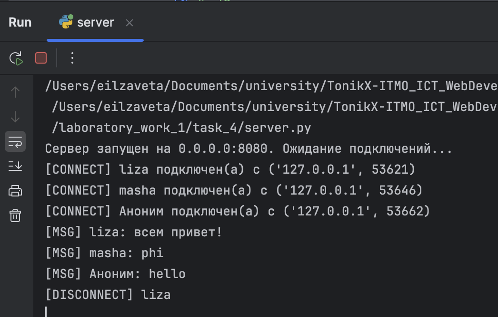
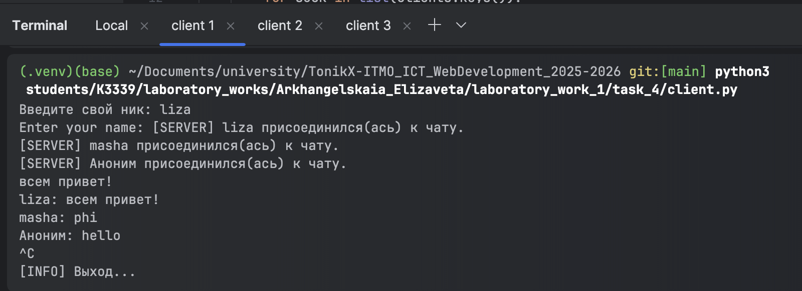
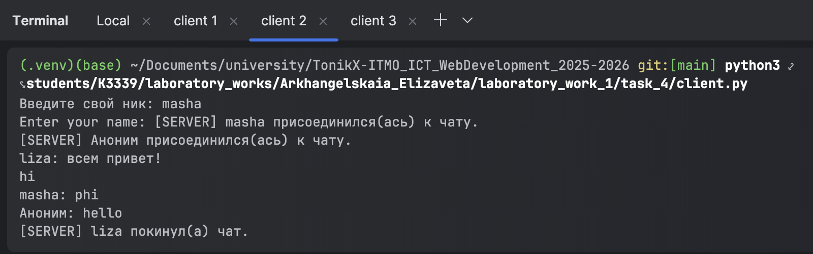
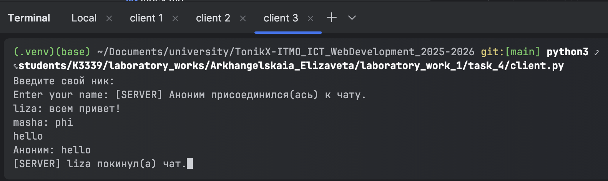

Задание 4
Реализовать двухпользовательский или многопользовательский чат. Для максимального количества баллов реализуйте многопользовательский чат.
Требования:
- Обязательно использовать библиотеку socket.
- Для многопользовательского чата необходимо использовать библиотеку threading.
Реализация: - Протокол TCP: 100% баллов. - Протокол UDP: 80% баллов. - Для UDP используйте threading для получения сообщений на клиенте. - Для TCP запустите клиентские подключения и обработку сообщений от всех пользователей в потоках. Не забудьте сохранять пользователей, чтобы отправлять им сообщения.
Выполнение
Был реализован многопользовательский чат с использованием протокола TCP.
В файле client.py пользователь подключается и может отправлять всем сообщения.
Запускается отдельный поток для параллельного приёма сообщений от сервера.
threading.Thread(target=listen_for_messages, args=(sock,), daemon=True).start()
target это функция, которую должен выполнить поток. Она отвечает за получение и отображение сообщений от сервера.
def listen_for_messages(sock):
while True:
try:
data = sock.recv(4096)
if not data:
print("[INFO] Соединение с сервером закрыто.")
break
sys.stdout.write(data.decode("utf-8"))
sys.stdout.flush()
except:
break
Отправка сообщений происходит в цикле:
try:
while True:
line = input()
line = line.encode("utf-8", errors="replace").decode("utf-8")
sock.sendall((line + "\n").encode("utf-8"))
except (KeyboardInterrupt, EOFError):
print("\n[INFO] Выход...")
finally:
sock.close()
В файле server.py сервер запускается так же в отдельном потоке. Каждому подключившемуся клиенту создаётся отдельный поток в основном цикле.
while True:
client_sock, addr = srv.accept()
thread = threading.Thread(target=handle_client, args=(client_sock, addr), daemon=True)
thread.start()
clients_lock = threading.Lock()
clients = {}
clients — хранит все подключённые клиенты.
clients_lock — гарантирует, что несколько потоков не будут одновременно изменять словарь.
В этой функции клиент подключается и отправляет сообщения.
def handle_client(client_sock, addr):
try:
client_sock.sendall(b'Enter your name: ')
name_bytes = recv_until_newline(client_sock)
if not name_bytes:
remove_client(client_sock)
return
username = name_bytes.decode('utf-8').strip()
if not username:
username = f'{addr[0]}:{addr[1]}'
with clients_lock:
clients[client_sock] = username
print(f'[CONNECT] {username} подключен(а) с {addr}')
broadcast(f'[SERVER] {username} присоединился(ась) к чату.\r\n'.encode('utf-8'))
while True:
data = recv_until_newline(client_sock)
if not data:
break
text = data.decode('utf-8', errors='replace').rstrip('\n')
message = f'{username}: {text}\n'
print(f'[MSG] {message.strip()}')
broadcast(message.encode('utf-8'))
except Exception as e:
print(f'[ERROR] Ошибка с клиентом {addr}: {e}')
finally:
remove_client(client_sock)
Отправка сообщений всем:
def broadcast(message: bytes):
with clients_lock:
for sock in list(clients.keys()):
try:
sock.sendall(message)
except:
remove_client(sock)
Чтение строки до \n:
def recv_until_newline(sock):
buffer = bytearray()
try:
while True:
chunk = sock.recv(1024)
if not chunk:
return b''
buffer.extend(chunk)
if b'\n' in chunk:
break
except:
return b''
idx = buffer.find(b'\n') + 1
return bytes(buffer[:idx])
Отключение клиента от чата:
def remove_client(sock):
with clients_lock:
name = clients.pop(sock, None)
try:
sock.close()
except:
pass
if name:
print(f'[DISCONNECT] {name}')
broadcast(f'[SERVER] {name} покинул(а) чат.\n'.encode('utf-8'))



